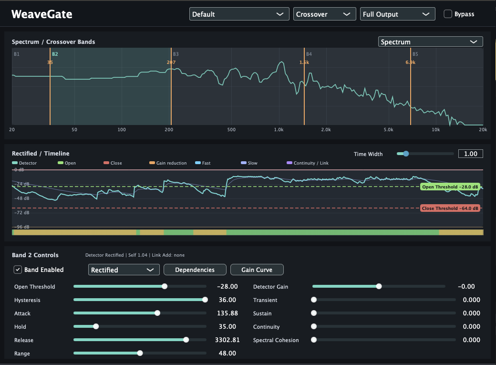

Version 1.3.0 — Out now.
Multiband Gate / Spectral Expander
WeaveGate is a multiband gate and spectral expander. Instead of using one detector and one gain stage for the whole signal, it splits the signal into frequency regions, evaluates each region with its own detector, and maps the detector result to gain reduction through editable curves and inter-band dependency rules.
The plug-in can run as a conventional crossover-based multiband processor, or as an FFT spectral engine where frequency bins are assigned to bands and processed directly. The goal is not only to make a signal quieter below a threshold, but to define how frequency regions open, close, influence each other, and transition over time.
Use it to clean up, reshape, or rhythmically organize complex material where different frequency regions should open and close in different ways.
Version 1.3.0 adds tooltips to the interface and includes bug fixes.
Crossover mode uses Linkwitz-Riley-style band splitting and recombines the processed bands in the time domain. It is the lower-latency path and is suited to conventional multiband gating, expansion, monitoring, and threshold editing.
Spectral mode processes FFT bins directly. It uses a 2048-sample FFT with 50% overlap-add, applies a Hann analysis/synthesis window, assigns bins to the current bands, and gates those bins according to the band's detector and gain mapping. This mode introduces additional latency.
Band boundaries are editable on the spectrum display. A band owns its threshold, hysteresis, attack, hold, release, range, detector gain, detector mode, dependency settings, and gain-curve points.
The processor exposes views for the full output, selected band, detector signal, opened signal, removed signal, and boundary signal. Timeline data shows detector level, thresholds, gain reduction, fast/slow envelopes, transient score, continuity, and link contribution.
WeaveGate also tracks transient and continuity information inside each band. These values can influence the effective timing and threshold behavior so a band does not have to respond only to static level. Transient amount, sustain amount, and continuity amount provide a way to bias the gate toward sharper openings, more stable sustained behavior, or smoother release motion.
Spectral Cohesion blends neighboring-band detector information into the decision process. This can make adjacent frequency regions behave more coherently instead of opening and closing as isolated strips.

WeaveGate version 1.3.0 is available for macOS and Windows. The macOS package includes AAX, AU, and VST3 builds. The Windows package is VST3.
Email: kjdevapphelp@gmail.com